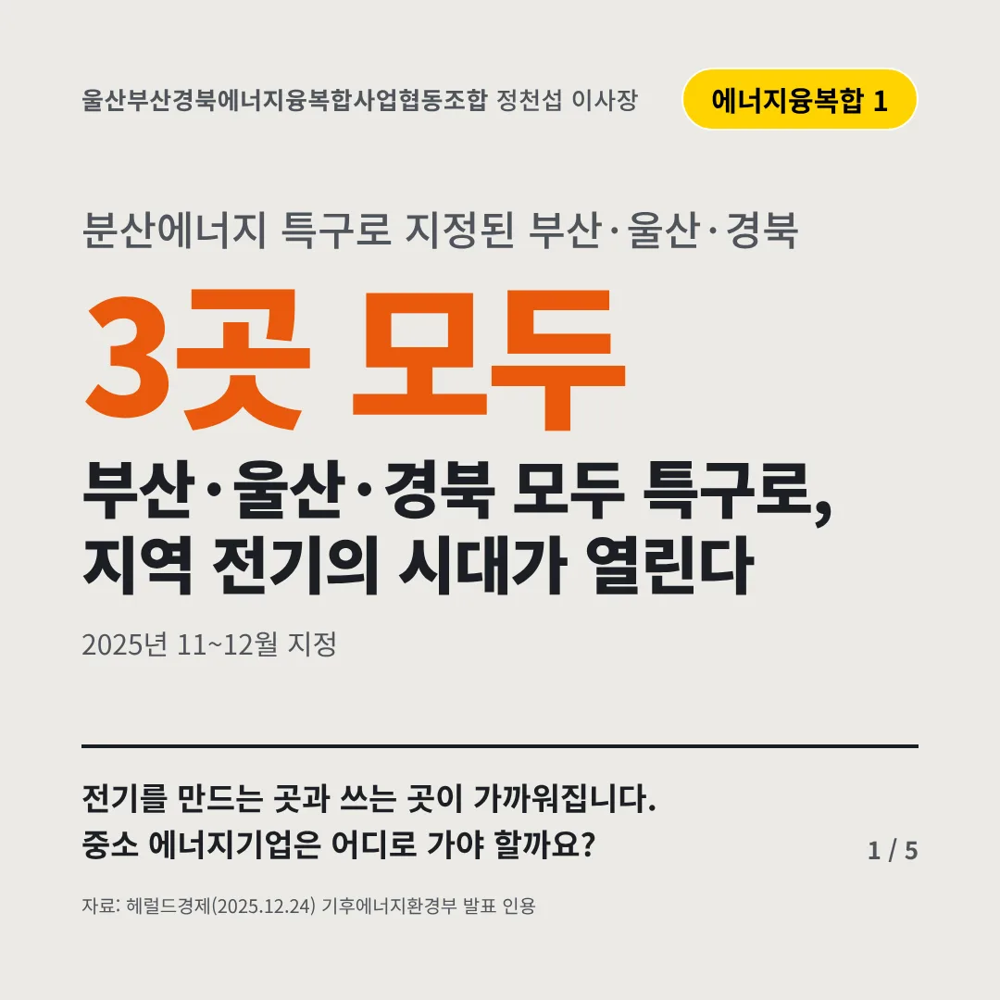
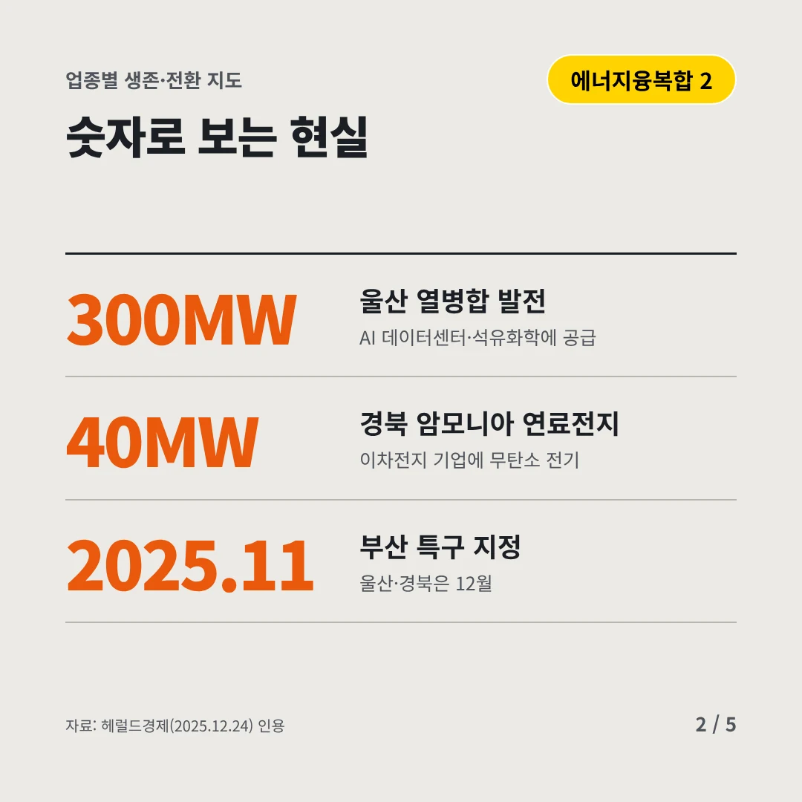
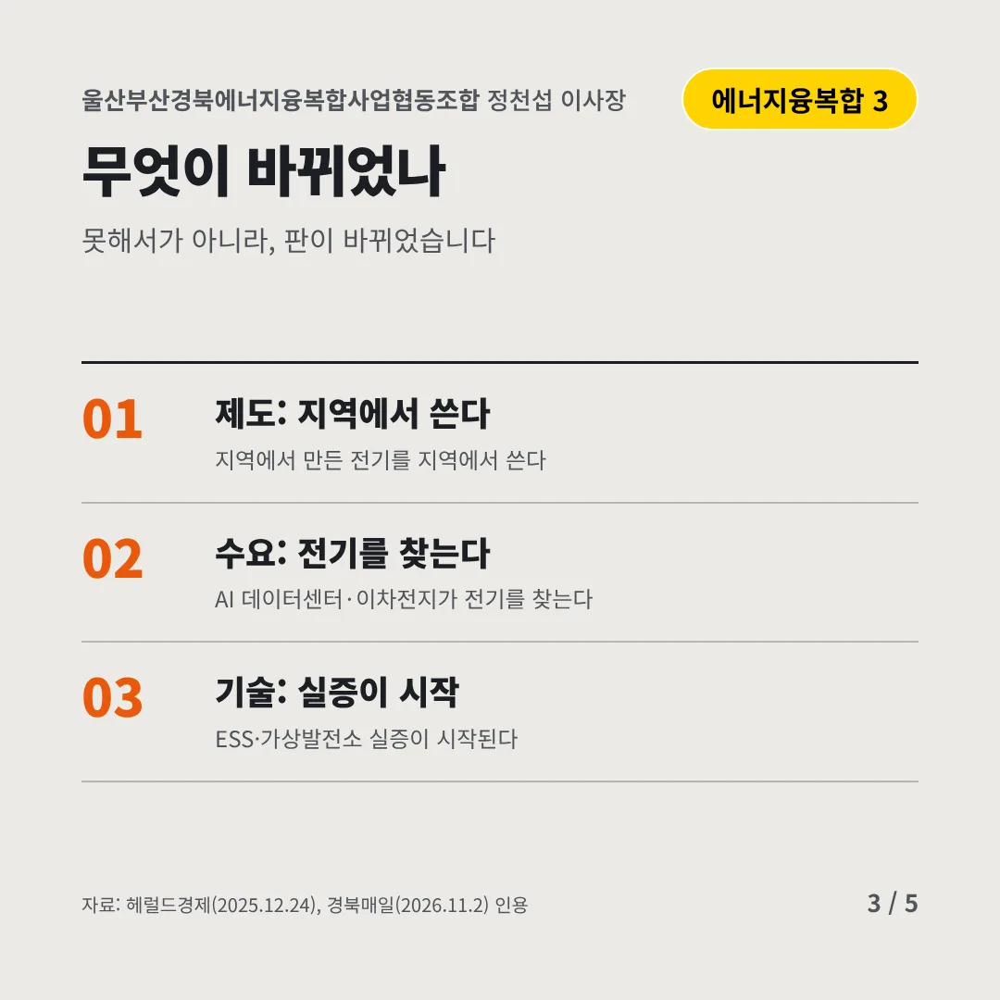
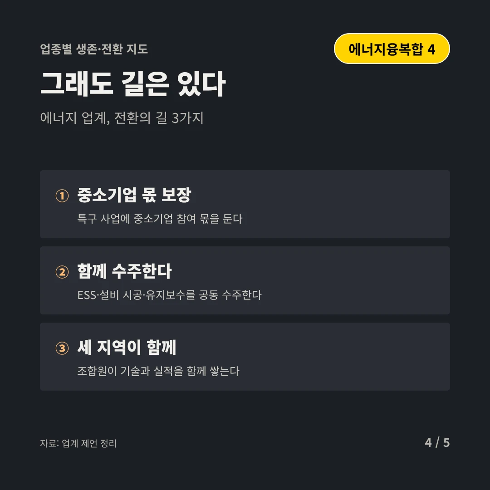
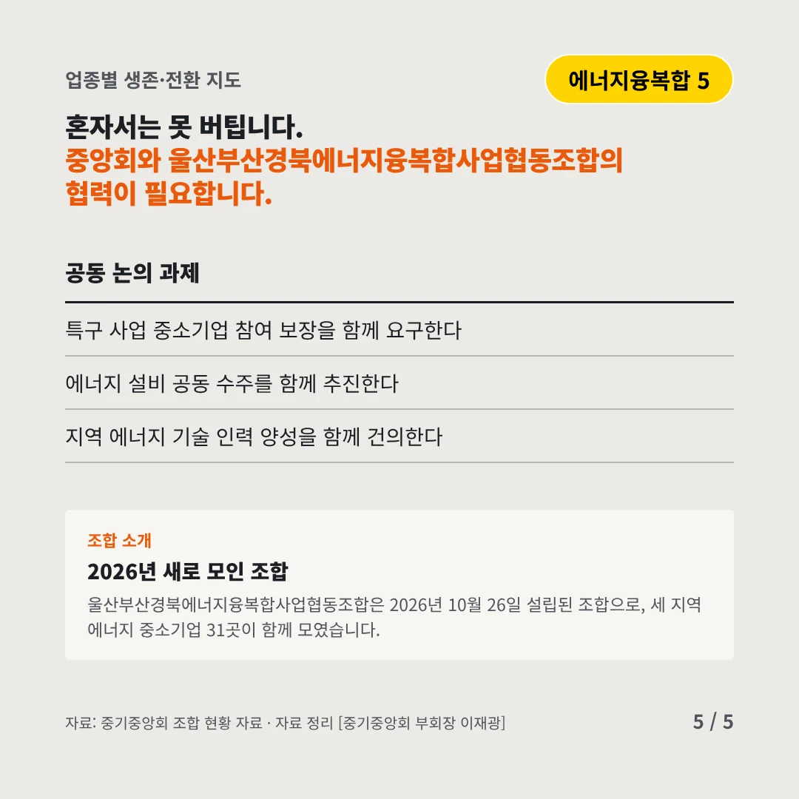
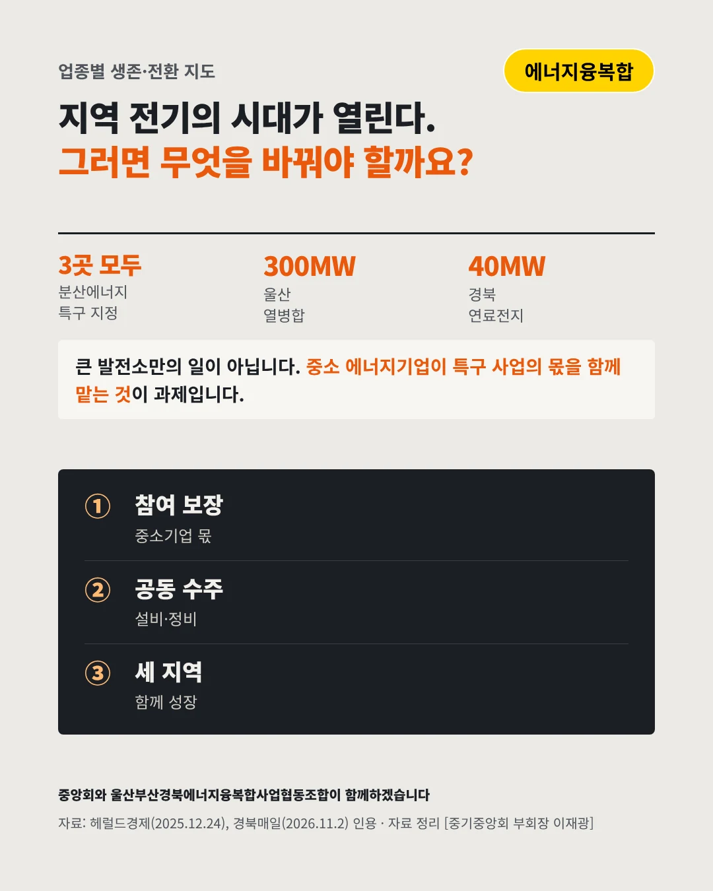

울산부산경북에너지융복합사업협동조합
부산·울산·경북 모두 특구로, 지역 전기의 시대가 열린다
3곳 모두 분산에너지 특구로 지정된 부산·울산·경북






전기를 만드는 곳과 쓰는 곳이 가까워집니다. 중소 에너지기업은 어디로 가야 할까요?
숫자로 보는 현실
- 300MW울산 열병합 발전AI 데이터센터·석유화학에 공급
- 40MW경북 암모니아 연료전지이차전지 기업에 무탄소 전기
- 2025.11부산 특구 지정울산·경북은 12월
무엇이 바뀌었나
- 제도: 지역에서 쓴다지역에서 만든 전기를 지역에서 쓴다
- 수요: 전기를 찾는다AI 데이터센터·이차전지가 전기를 찾는다
- 기술: 실증이 시작ESS·가상발전소 실증이 시작된다
그래도 길은 있다
- 중소기업 몫 보장특구 사업에 중소기업 참여 몫을 둔다
- 함께 수주한다ESS·설비 시공·유지보수를 공동 수주한다
- 세 지역이 함께조합원이 기술과 실적을 함께 쌓는다
한 장 요약

조합 소개
울산부산경북에너지융복합사업협동조합은 2026년 10월 26일 설립된 조합으로, 세 지역 에너지 중소기업 31곳이 함께 모였습니다.
자료: 헤럴드경제(2025.12.24), 경북매일(2026.11.2)